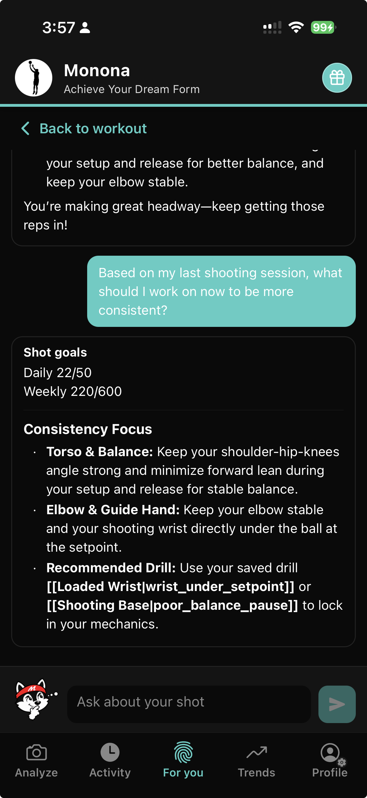
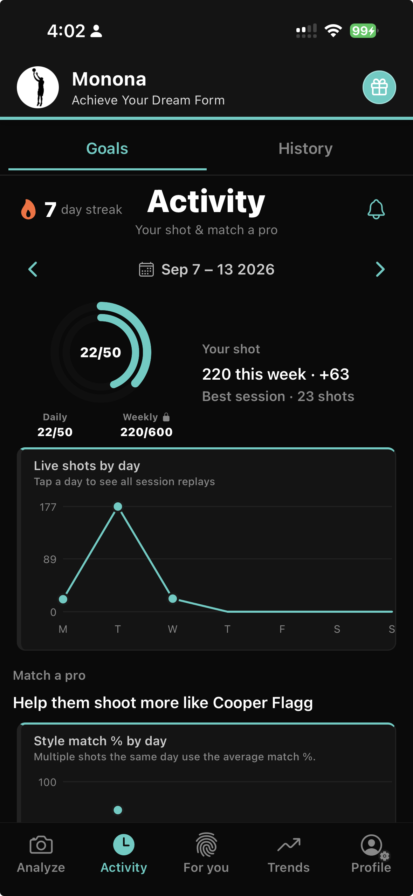

Realtime release feedback
Get coaching cues as soon as the ball leaves your hand.
Live Shoot
Realtime feedback the moment you release. Mo has context for every shot you take, every improvement you make, and is always there to accompany your journey.
Realtime cues in the gym, then a full review of every rep.
Get coaching cues as soon as the ball leaves your hand.
Say "Hey Mo" or "Hey Monona", ask a question, and get an answer in realtime.
Break every shot into phases and review what happened on each rep.
Instant spot-on zoom into the form break that cost the shot.
See how power and energy move through your motion.
Wrap the workout with a clear summary of what improved and what to fix next.
Mo has context for every shot you take, every improvement you make, and is always there to accompany your journey.

Your training companion who tracks your shots and data and stays with you from the first release to the next breakthrough.
Streaks, daily and weekly shot goals, live shots by day, and session history so nothing gets lost between workouts.

Players and coaches using Live Shoot and Mo.
The slow-motion breakdown lets me show my players exactly where their form is slipping. The NBA comparisons really engage my 12- and 13-year-olds, and it's a tool I actually want to use in training.
I've been testing this for a while and it's the real deal. It matched me to Curry's form and the results showed up. A few minor hiccups, but nothing that stopped me from using it.
Completely free, and it analyzes your shot with pro comparisons, percentages, and angles. Pick a model player or get auto-matched, and either way you get a clear picture of what's working and what isn't.
Tried it on a few clips from my last pickup game and the elbow path feedback actually nailed a hitch I didn't even realize I had. The pro comparison overlay is super helpful for spotting small timing gaps.
Live Shoot, Mo, and getting started.
Live Shoot is Monona Coach's realtime training mode. It gives feedback on each release as you shoot, lets you talk to Mo, and includes phase-by-phase replay, deficiency zoom, energy breakdown, and session review.
Say "Hey Mo" or "Hey Monona", then ask your question. Mo answers in realtime using context from every shot you take and every improvement you make.
Yes. Mo has context for every shot and improvement, so advice and plans stay tied to your real training history.
Yes. Monona Coach is free to download on iOS, including Live Shoot, Mo chat, and progress tracking.
Use your iPhone to film from a side view with one shooter and one basketball in frame. A clear view of your full shooting motion from setup through follow-through gives the best results.
Pro form matching and NBA model comparison live on our Pro Comparison page.
Download Monona Coach and start a Live Shoot session today.